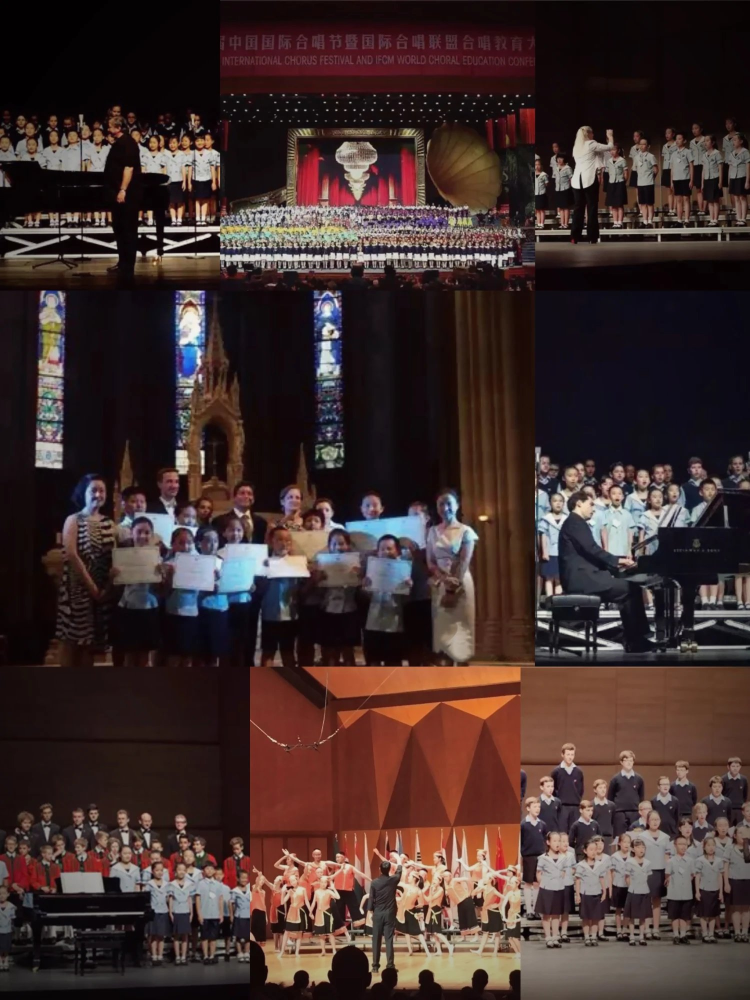
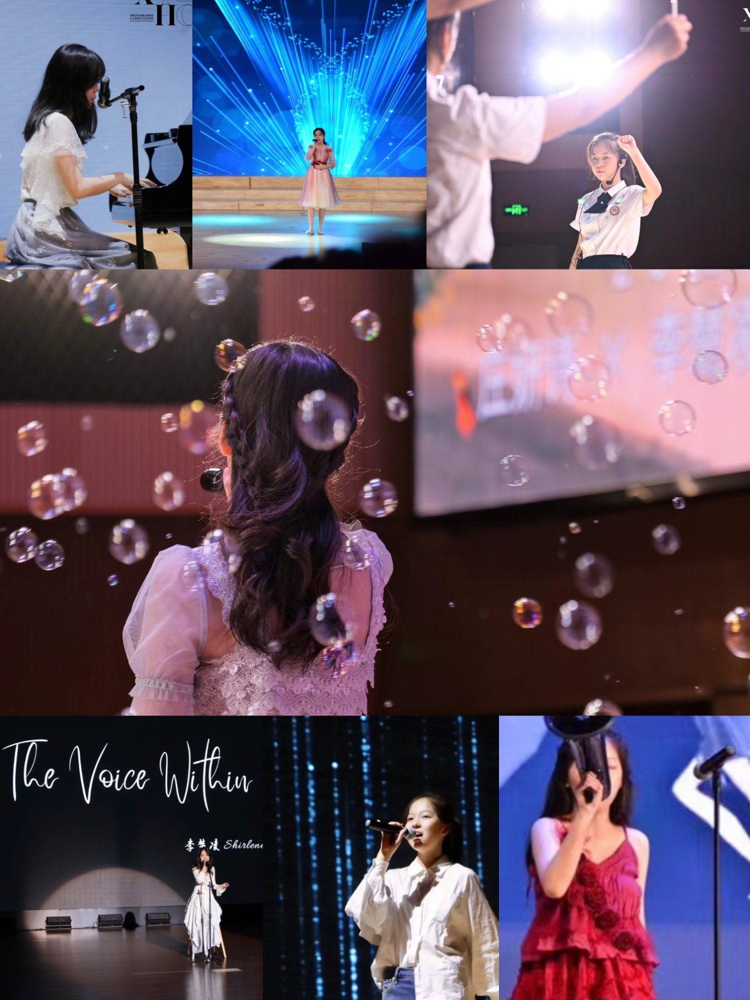
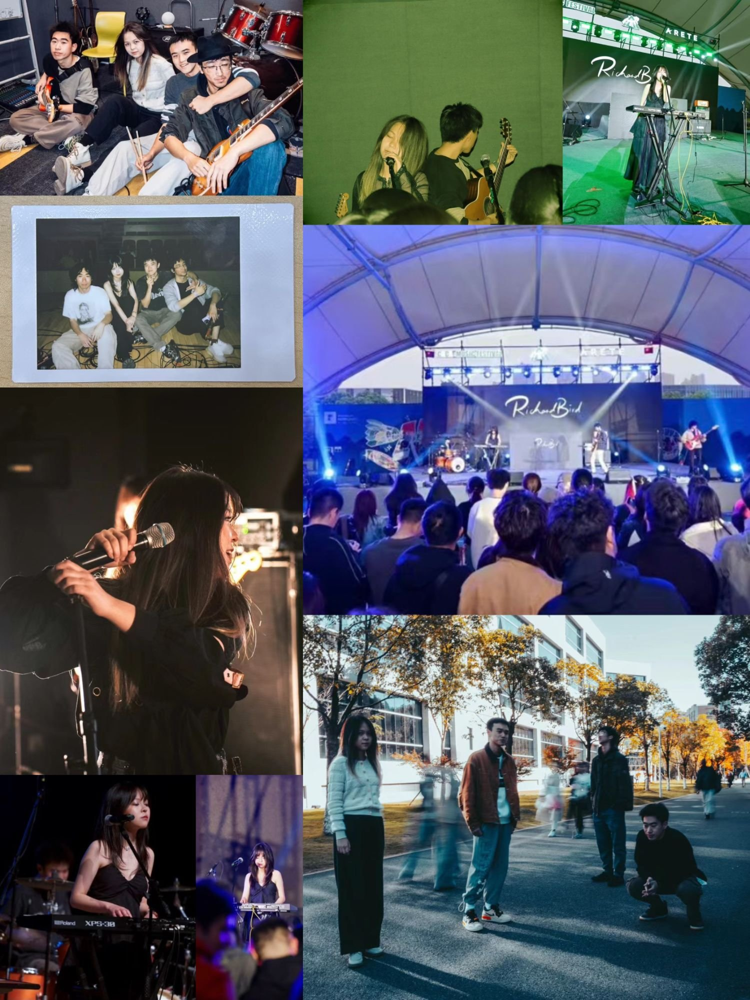
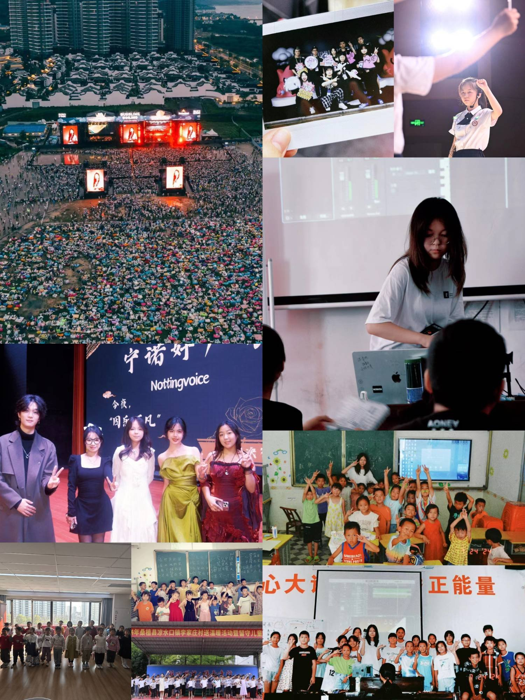

The story so far
03 — STORYIt started in a choir.
I began studying classical piano at an early age and passed the China Conservatory of Music's Grade 6 examination when I was seven. I later joined the Minnan Grand Theatre Children's Choir in Xiamen, China, where I had the opportunity to perform alongside choirs from Austria, France, and New York. Around the same time, I also began training in bel canto. My interest in singing continued into high school, where I was admitted to Xiamen No.1 High School as a vocal specialist and performed with both its children's and mixed choirs.
- With the Minnan Grand Theatre Children's Choir, shared stages with the Wilten Boys' Choir (Austria), Les Petits Chanteurs de Saint-Marc and Les Petits Chanteurs à la Croix de Bois (France), and a gospel choir from Harlem, New York
- The 13th China International Chorus Festival and IFCM World Choral Education Conference — opening ceremony at the Great Hall of the People; "Four Outstanding Chinese Children's Choirs" concert at the Beijing Tianqiao Performing Arts Center
- Artistic exchange with Les Petits Chanteurs à la Croix de Bois in Autun, France, received at the Town Hall by the Mayor of Autun
- Xiamen No.1 High School Choir — Gold Award and first place, Folklore category, 2017 World Youth & Children's Choir Festival – Hong Kong (WYCCF), with folk songs of China's Yi and Tujia ethnic minorities — "Spring Has Come" and "Dong Dong Kui" — and the Balinese "Janger"
- China Conservatory of Music piano examination, Grade 6, passed at age seven
A voice of my own.
Since high school, I have remained active as a solo singer, performing at campus music festivals and other events. I won first place in the Xiamen No.1 High School Singing Competition in 2021, placed in the Top 10 of UNNC Voice in 2023, and was runner-up in the University of Nottingham CSSA Singing Competition in 2025. Beyond competing, I was invited to serve as a mentor and judge for UNNC Voice in 2024 and to perform at the CSSA-UK Southern Performing Arts Festival in 2026, along with various other events.
- 2020 · Xiamen No.1 High School New Student Welcome Ceremony, lead vocal with the school band · 大鱼 Big Fish (Zhou Shen)
- 2020 · Xiamen No.1 High School New Year's Eve Gala, solo · Bang Bang (Jessie J, Ariana Grande & Nicki Minaj)
- 2021 · Xiamen No.1 High School Inter-School Music Festival, piano and vocal · 画 Painting (G.E.M.)
- 2021 · 1st place, Xiamen No.1 High School Singers Competition · Pu Shu / Soviet song medley, 她说 She Says (JJ Lin), Listen (Beyoncé), Bellini's "Vaga luna, che inargenti"
- 2022 · Gaokao send-off concert for an audience of 3,000+ · 夜空中最亮的星 The Brightest Star in the Night Sky (Escape Plan)
- 2023 · Xiamen No.1 High School Graduation Gala, solo and band lead vocal · 未了 Endless (Sodagreen), Empire State of Mind
- 2023 · UNNC Clubs Fair, solo · 怪美的 Ugly Beauty (Jolin Tsai)
- 2023 · Top 10, UNNC Voice, University of Nottingham Ningbo China · Still Loving You (Scorpions), Pu Shu / Soviet song medley, 我们的爱 Our Love (F.I.R.)
- 2024 · Lead vocal on 星火 "Fiery Stars", the original song for UNNC's 20th anniversary
- 2024 · Mentor and judge at UNNC Voice, opening the final · The Voice Within (Christina Aguilera); 星期三或礼拜三 with a contestant
- 2025 · Runner-up, University of Nottingham CSSA Singing Competition · Stop! (Sam Brown)
- 2026 · Third prize, CSSA-UK Southern Performing Arts Festival · Language (Tori Kelly)
Then came the band.
In September 2023, four of us, all science and engineering students with a shared love of music, formed Richard Bird, a band rooted in blues and hard rock that later expanded into funk and R&B. I take on lead vocals and keyboard/synthesizer. Since then, we have opened the evening stage at the CACA Music Festival, performed at multi-band showcases including To Be Found and Cracking Seeds, and played at countless other campus music festivals.
"You know some birds are not meant to be caged,
their feathers are just too bright."
- 2023 · T!NY Vol.1 and Vol.2 "Peace in Pieces", our first shows, lead vocal · Whole Lotta Love (Led Zeppelin), Come as You Are (Nirvana), Moon on the Water (BECK); Heartbreaker (Led Zeppelin), Hammer to Fall (Queen), Amani (Beyond)
- 2024 · Cracking Seeds, UNNC Bands Club special performance, lead vocal and keys · For My Friends (Bill Withers, Beth Hart & Joe Bonamassa version), Higher Ground (Stevie Wonder), and our originals Perfect Story and On Your Right
- 2024 · Guest keyboardist with other bands at the Wonderland Music Festival and UNNC Show Night · Rick Rice Rock (original), 天使にふれたよ！ Tenshi ni Fureta yo! (Ho-kago Tea Time, K-ON!)
- 2024 · Guest lead vocalist at the Wonderland Music Festival · Crossroads (Robert Johnson), 开心往前飞 Fly Forward with Joy (Vivi)
- 2025 · CACA Music Festival, invited opening act for the evening stage, lead vocal and keys · Superstition (Stevie Wonder), 艷火 Pyrojewel (Deserts Chang)
- 2025 · To Be Found, UNNC Bands Club special performance, lead vocal, keys and live programming · Rio Funk (Lee Ritenour), Superstition, 艷火 Pyrojewel, Heartbreaker, Still (Brian McKnight)
Passing it on.
Music has also been something to organise and pass on. I conducted my class to the Best Conductor award at Xiamen No.1 High School's choir competition, led the performance team of the UNNC Music Association for a year, and returned to UNNC Voice as a mentor with a team of my own and a seat on the jury. In the summer of 2024 I worked stage crew at a 50,000-strong music festival, then spent July directing choir rehearsals for a hundred rural primary school children in Hunan.
- High school · Organised and conducted my class's entry to the Xiamen No.1 High School choir competition as overall leader — Best Conductor award
- 2023–24 · Performance Team Leader, UNNC Music Association — weekly live music sessions, performers for university-wide events, rehearsals and performance preparation
- Jun 2024 · Volunteer stage crew, Bubbling Boiling Music & Arts Festival (50,000+ attendees) — monitor-desk-to-PA operations, run-down tracking, cable patching at changeovers
- Jul 2024 · Volunteer teacher, Summer Education Programme, Lijiazhuang Village, Hunan — choir rehearsals for 100+ rural primary school children and interactive music workshops such as live looping
- Dec 2024 · Mentor and judge, UNNC Voice — built and coached my own team of contestants through the competition
- Mar–Apr 2025 · Children's choir teaching in a Ningbo community
My work lives in
the room between.
Writing code while making music keeps bringing me back to two questions: what can AI actually do for a musician, and where does my own judgment still matter? Pocket Producer began with my own half-finished demos. Quill began with the wish for a sonic eyedropper that keeps the vibrato but swaps the sound. Second Self began with wondering whether a singer can duet with herself from a few minutes ago. On HARP I learned to test music AI models with a musician's ear. All of it points the same way: tools that leave the musician in charge of the decisions.
- Pocket Producer — session-conditioned retrieval for unfinished music; every suggestion can be inspected, auditioned, inserted and undone · ISMIR 2026 LBD
- Quill — how an instrument sounds and how it is played, learned as two swappable assets and played live from a MIDI keyboard · ISMIR 2026 LBD
- HARP — 29 music AI models deployed and validated inside a DAW workflow with the University of Rochester and Northwestern University; a per-model MIDI-instrument check I proposed was merged
- Second Self — a Max for Live system in which a singer duets with herself from a few minutes earlier, steered by the chords being played
- Next — audio signal processing, music information retrieval and human-computer interaction: pairing rigorous evaluation with watching how musicians actually use a tool



